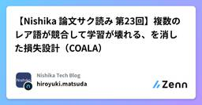

Nishika Tech Blogのフィード
https://zenn.dev/p/team_nishika
Nishika公式テックブログです。 「テクノロジーを、普段テクノロジーからは縁の遠い人にとっても当たり前の存在とする」を目標に、 音声認識AIプロダクトSecureMemo/SecureMemoCloudを中心とした事業を展開しています。
フィード

【Nishika 論文サク読み 第24回】DiaScriber
Nishika Tech Blogのフィード
こんにちは。NishikaのAIエンジニアの髙山です。今回は以前紹介したMOSS Transcribe Diarizeを比較対象としている、MSASR(Multi-Speaker Automatic Speech Recognition, 複数話者音声認識)のモデルを紹介します。 論文「DiaScriber: A Speech LLM for Joint Diarization and Transcription in Multi-Speaker Scenarios」公開日：2026年08月24日著者・組織：西北工業大学 ASLP@NPU著者の中にはQwen3-ASR, ...
1日前

【Nishika 論文サク読み 第23回】複数のレア語が競合して学習が壊れる、を消した損失設計（COALA）
Nishika Tech Blogのフィード
こんにちは。Nishika AIエンジニアの松田です。音声認識で固有名詞を認識させたいとき、登録した単語が増えるほど逆に効かなくなる、という話が業務でも出がちなので、関連する論文をpickしてみました。 論文COALA: Robust Contextualized Speech-augmented Language Modeling for ASR via Contrastive Regularizer and Biasing Score Estimation 目的音声認識に固有名詞や専門用語を効かせる contextual biasing（あらかじめ渡した語彙リストを認識...
6日前

リアルタイム音声認識の"精度と遅延"両立を実現するための「AIの確信度」を使った新手法【Nishika 論文サク読み 第22回】
Nishika Tech Blogのフィード
リアルタイム音声認識の「精度 vs 遅延」問題：「AIの不確実性」で出力タイミングを決める新手法こんにちは。NishikaでAIエンジニアとしてインターンをしている笠原です。業務で文字起こしに関わる中で、オフライン音声認識とリアルタイム音声認識の間には、まだ無視できない精度差があると感じていました。特に気になったのが、リアルタイム音声認識では、いつ文字を確定して表示すればよいのか？ という問題です。最近の研究ではこの問題にどう取り組んでいるのか調べていたところ、今回紹介する論文にたどり着きました。Uncertainty-Based Streaming ASR With Ev...
16日前
AIに任せた仕事と、人が担った仕事 —会議AIエージェントAPI開発の振り返り
Nishika Tech Blogのフィード
こんにちは、AIエンジニアの髙山です。先日、弊社の会議AIエージェントサービス SecureMemoCloud の公開APIをリリースしました。要件定義からテストまで、初期開発におよそ4ヶ月かかっています。ノルマとしていた機能の開発自体は予定より早く終わり、Claude Code様様でした。開発はこれからも続くのですが、いったんここまでの「AI Agent Nativeな開発」を振り返って、何が効いたのか、どこで問題が起きたのか、これからどう発展させていくかを書き残しておきます。 何を作ったかSecureMemoCloudの機能を外部から呼べるようにする公開APIを新規に開発し...
19日前
【Nishika 論文サク読み 第21回】 テーブルデータでよく使われるベンチマーク、Tabarenaについて
Nishika Tech Blogのフィード
こんにちは。NishikaでAIエンジニアとしてインターンをしている西尾です。表形式の予測モデルを調べる時によく評価指標として見かけるTabarenaが実際どういうものなのか気になったので論文を読んでまとめてみました。https://huggingface.co/spaces/TabArena/leaderboard で現在のリーダーボードを確認できる 論文TabArena: A Living Benchmark for Machine Learning on Tabular Data 要旨表形式データに対する深層学習および基盤モデルの人気が高まるにつれ、標準化された信...
20日前
【GENIAC第3期成果】会議要約ベンチマーク「J-MeetEval」の整備
Nishika Tech Blogのフィード
J-MeetEval：日本語の会議要約タスクにおける指示追従性ベンチマークの構築と評価本成果は、経済産業省および国立研究開発法人新エネルギー・産業技術総合開発機構（以下「NEDO」）が推進する、日本の生成AIの開発力強化を目的としたプロジェクト「GENIAC（Generative AI Accelerator Challenge）プロジェクト」の一環として実施した結果です。本記事では、Nishika AIエンジニア並内がその取り組みの一つである 日本語会議要約ベンチマーク「J-MeetEval」 について共有します。 本記事の概要日本語の会議タスクに特化した指示追従性ベン...
23日前
【Nishika 論文サク読み 第20回】ReDimNet2: 公開データで埋め込み性能を比較してみた🔈
Nishika Tech Blogのフィード
こんにちは、AIエンジニアの山口です。暑い日が続きますが、話者埋め込みモデルとして使われる ReDimNet の新作が2ヶ月ほど前に出ていたので試してみました。論文の紹介 → 公開データセットで埋め込んでみた結果、の流れでお話しさせていただきます。 論文📖ReDimNet2公開日: 2026/3/12Organization: Palabra AI, London, United KingdomAuthors: Ivan Yakovlev, Anton Okhotnikovこれは2024年に出たReDimNetの進化版ぽいです。果たしてどう違うのでしょうか。...
1ヶ月前
【Nishika 論文サク読み 第19回】AIに寿命を与えたら、生き残るために本を書いて売り始めた！
Nishika Tech Blogのフィード
こんにちは。NishikaでAIエンジニアのインターンとして参画している渡邊征央です。社員の皆さんがすごく優しくしてくれて昼食などにもよく誘っていただくためかなり楽しいインターンライフを送ることができています。今回の「論文サク読み」で取り上げるのは、『OpenLife』というAIエージェントの論文です。AIエージェントに「予算=寿命」を持たせ、使い切れば運用が止まる(=死に相当する)という条件のもとで現実世界に放つと何が起きるのか——それを6体のエージェントと12週間かけて観察した実験の記録です。まずは、その実験のなかで起きた象徴的な出来事から紹介します。2026年6月中旬、実験開...
1ヶ月前
【Nishika 論文サク読み 第18回】GigaSpeechBench
Nishika Tech Blogのフィード
論文GigaSpeechBench: A Real-World Multilingual Speech-to-Text Benchmark 目的既存のASRベンチマーク（Common VoiceやFLEURSなど）は朗読音声・クリーンな録音環境に偏っており、ベンチマークスコアの改善が実世界での堅牢性を反映しなくなっている。さらに、専門用語・年齢差・方言・アクセント・低資源言語といった課題は個別のデータセットで断片的に評価されているだけで、統一されたテストセットが存在しない。これらの課題に対して、実環境収録の音声で統一的に測れるベンチマークを構築する。 手法YouTu...
1ヶ月前
【Nishika 論文サク読み 第17回】MOSS Transcribe Diarize
Nishika Tech Blogのフィード
こんにちは、AIエンジニアの髙山です。E2E SATSモデルということで、既存のASR＋diarization構成をどういうアーキテクチャで実現しているのか気になり論文を読みましたので紹介します。 論文タイトル：「MOSS Transcribe Diarize Technical Report」公開日：2026年7月17日著者・組織: OpenMOSS / MOSI.AI（Corresponding: Xipeng Qiu） TL;DRASRとspeaker diarizationを1つのMLLMで同時に解くSpeaker-Attributed, Time-Sta...
1ヶ月前
Claude Codeのルールを「育てる資産」として運用して — 効いたこと、まだ解けていないこと
Nishika Tech Blogのフィード
Claude Codeのルールを「育てる資産」として運用して — 効いたこと、まだ解けていないことこんにちは、km111です。Nishikaでアプリケーションエンジニアをしています。私たちは SecureMemo という製品を、フロントエンド（Flutter デスクトップアプリ）とバックエンド（Python の文字起こしサービス基盤）の2つのプロジェクトで開発しています。スタックも設計思想も違いますが、Claude Code の運用については1つの共通した考え方で回しています。それは、Claude を「設計に従う実装者」として扱うという考え方です。設計判断やレビューは人間が握...
2ヶ月前
【Nishika 論文サク読み 第16回】LLMデコーダーは公平に聞いているか？鍵はLLMの規模より音声エンコーダの圧縮度
Nishika Tech Blogのフィード
こんにちは。Nishika AIエンジニアの松田です。WhisperからLLMデコーダ型へとASRのアーキテクチャが世代交代しつつあり、その品質特性が業務でも気になるところなので、関連する論文をpickしてみました。 論文Do LLM Decoders Listen Fairly? Benchmarking How Language Model Priors Shape Bias in Speech Recognition 目的ASRのデコーダは、言語モデルを持たないCTC型（Wav2Vec2）→ 書き起こしから暗黙的に言語モデルを学ぶencoder-decoder型（Wh...
2ヶ月前
FastAPIのDI(Depends)の実装で気を付けていること
Nishika Tech Blogのフィード
はじめにこんにちは、AIエンジニアの髙山です。普段は音声認識・話者認識・LLM周りのR&Dや、プロダクトのAI部分の開発・運用を主に担当しています。一方で、受託案件などを含めて、アプリケーションエンジニアリング寄りの開発に関わることもあります。最近FastAPIに触れる機会があり、Dependsを使ったDIについて考えることがありました。DI（Dependency Injection / 依存性の注入）は、クラスや関数が必要とする依存オブジェクトを、自分で生成せずに外側から受け取る設計手法です。FastAPIでは、このDIを実現する仕組みとしてDependsが用意されて...
2ヶ月前
【Nishika 論文サク読み 第15回】SpeechCueLLM
Nishika Tech Blogのフィード
こんにちは。NishikaでAIエンジニアとしてインターンをしている笠原です。インターンを始めて4か月ほど経ち、社内の方々のおかげで徐々に業務にも慣れ楽しく働いています。Nishikaでは持ち回りで週一で論文のサク読み記事を出しており、私は前々から興味があった音声の感情認識についての論文を読みました。 論文Beyond Silent Letters: Amplifying LLMs in Emotion Recognition with Vocal Nuances (NAACL 2025)和題：無音の文字を超えて：声のニュアンスによるLLMの感情認識能力の増幅図は論文から引...
2ヶ月前
社内輪読会:実践的パフォーマンスエンジニアリングによるAI高速化
Nishika Tech Blogのフィード
ご無沙汰しております。AIエンジニアの山口です。私がこの春初めて、社内勉強会の主催をやってみました。具体的には、以下になります。テーマ: 機械学習のパフォーマンスエンジニアリング期間: 2026/04~2026/06の3か月間開催頻度: 週1 (毎回1時間) 1. はじめに（概要・動機）まずは、パフォーマンスエンジニアリングについて簡単にご紹介します。目的: AIシステムの処理速度・レイテンシ・メモリ効率といった数値の改善主にやること計測・プロファイリング - どこがボトルネックになっているかを特定する最適化 - モデルの量子化・蒸留、推論エンジンの選...
2ヶ月前
【Nishika 論文サク読み 第14回】効率的な言語モデル HRM-Text
Nishika Tech Blogのフィード
こんにちは。NishikaでAIエンジニアとしてインターンをしている西尾です。まだ参加したばかりでわからないことも多くありますが、雰囲気がとても良く楽しく働けております。今回は業務の一環として、元々興味のあった言語モデルに関する論文を読んで紹介します。 論文HRM-Text: Efficient Pretraining Beyond Scaling 目的LLM の事前学習は、インターネット規模の生テキストと膨大な計算資源（数兆トークン・巨大GPU）を前提としており、基礎研究の参入障壁が極端に高い。。この計算量対性能比を劇的に下げ、事前学習を再び手の届くものにしたい。 ...
2ヶ月前
【Nishika 論文サク読み 第13回】音声を文字起こししながら固有表現も抽出する
Nishika Tech Blogのフィード
WhisperNER：音声を文字起こししながら固有表現も抽出する 論文項目内容タイトルWhisperNER: Unified Open Named Entity and Speech Recognition著者Gil Ayache, Menachem Pirchi, Aviv Navon, Aviv Shamsian, Gill Hetz, Joseph Keshet所属aiOla Research / Technion（イスラエル工科大学）出典arXiv:2409.08107v2（2025年8月）概要Whisper を拡張し...
3ヶ月前
Claude CodeでOSS更新を監視し、自社実装と照合して、NotionにR&Dチケットを自動起票するAIエージェント
Nishika Tech Blogのフィード
Nishika代表取締役CTOの松田です。Nishikaでは、毎週土曜の朝、誰も出社していない時間に、こんなことが自動で起きています。自社製品で利用するOSS repoについて、直近1週間の変更がスキャンされるその変更が 自社プロダクトの実装(どのバージョンをpinし、どのクラスを継承し、どの推論モードで使っているか) と照合される「自社にとって意味のある更新」だけが選別され、ファイルパス・行番号レベルで具体化された改善施策 がNotionのR&D TODOデータベースにチケットとして起票される月曜の朝、人間がやるのはBacklogに積まれたチケットを眺めて優先度を...
3ヶ月前
【Nishika 論文サク読み 第12回】Whisperの10倍速: Canary-1B-v2 & Parakeet-TDT-0.6B-v3
Nishika Tech Blogのフィード
論文https://arxiv.org/pdf/2509.14128 目的Whisperをはじめとする多言語ASRモデルは精度が高い一方で、大きくて遅いという課題がある。精度・サイズ・速度のトレードオフが常についてまわる。NVIDIAはこの課題に対し、25のヨーロッパ言語に対応しながら推論を高速化した2つのモデルを同時リリースした。Canary-1B-v2：ASR（文字起こし）＋AST（翻訳）の多機能モデルParakeet-TDT-0.6B-v3：ASR特化、速度を極限まで追求した小型モデルどちらも CC-BY-4.0（商用利用可）。https://hugging...
3ヶ月前
【Nishika 論文サク読み 第11回】Text-Embedding-to-Speech-Latent
Nishika Tech Blogのフィード
こんにちは。Nishika AIエンジニアの渡辺です。 論文Refining Pseudo-Audio Prompts with Speech-Text Alignment for Text-Only Domain Adaptation in LLM-Based ASR 目的音声認識（ASR）モデルは、学習時と異なるドメインでは性能が大きく落ちる。理想的にはターゲットドメインの音声データで微調整したいが、音声データの収集・アノテーションはコストが高く、テキストだけで適応させたいというニーズがある。近年主流のLLMベースASRは「音声エンコーダ＋プロジェクタ＋LLM」という構...
3ヶ月前